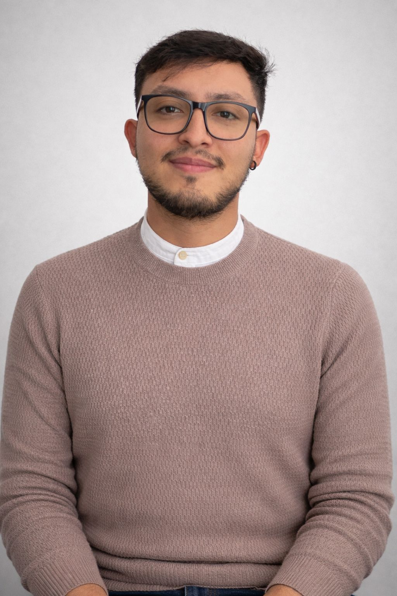

Perfil · Frontend Developer · UX/UI · Producto digital
Frontend Developer con enfoque UX/UI y 3 años construyendo interfaces web, prototipos funcionales y flujos digitales para productos reales. Combino diseño en Figma, desarrollo con React/TypeScript, soporte a usuarios y mejora continua para crear experiencias claras, usables y orientadas a negocio.
Diseño y desarrollo de una experiencia digital completa para restaurante: landing comercial responsive, presentación de producto, navegación clara, flujo de pedidos, estados de órdenes y lógica operativa pensada para usuarios no técnicos. El proyecto integra criterios UX/UI, consistencia visual, jerarquía de información, componentes reutilizables, validaciones, manejo de datos y una experiencia enfocada en conversión y operación.
Landing enfocada en comunicar servicios de diseño y desarrollo de sitios web/landings: estructura de propuesta, presentación de habilidades, proyectos, contacto y narrativa visual para clientes que necesitan presencia digital.
Flujos de compra, roles, rutas y ventas; diseño y lógica enfocada en datos operativos (ventas/usuarios) y trazabilidad.
Rediseño de flujos en contexto médico; foco en eficiencia, claridad, control de datos y escalabilidad.
React · TypeScript · JavaScript · HTML/CSS · Tailwind CSS · Angular · Figma · UX/UI Design · Prototipado · Design Systems · Responsive Design · REST APIs · Node.js · SQL (básico/intermedio) · MongoDB · Testing funcional (UAT) · Git/GitHub · Jira · Framer Motion
Aprendizaje continuo en desarrollo frontend, arquitectura de interfaces, UX/UI, producto digital, accesibilidad, consumo de APIs y mejora de aplicaciones web orientadas a usuarios reales.
Español — Nativo
Inglés — B+ (en progreso a
nivel avanzado)